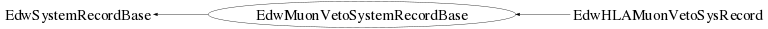

class EdwMuonVetoSystemRecordBase: public EdwSystemRecordBase
EdwMuonVetoSystemRecordBase.cc EdwDataStructure Author: Adam Cox <mailto:adam.cox@ik.fzk.de> on 3/25/10. * Copyright 2010 Karlsruhe Institute of Technology. All rights reserved. This is the base class for all Muon Veto System Records. Many of the Muon Veto System specific values are found here.
Function Members (Methods)
public:
private:
| void | CopyLocalMembers(const EdwMuonVetoSystemRecordBase& aRec) |
| void | InitializeMembers() |
Data Members
private:
| Int_t | fCommonStopTime | the TDC value of the common stop signal for Muon Veto Events. |
| Double_t | fDistanceEst | laser distance from the East wall to the MuVeto System |
| Double_t | fDistanceNemo | laser distance from the Nemo wall to the MuVeto System |
| UInt_t | fEventNumber | the event number returned by IRQ. Note, this can be reset in the middle of a run and there are a number of jumps to very high values |
| TBits | fEventQuality | the Event Quality bits set by Holger Nieder. |
| Int_t | fFileNumber | there are up to 99 files per Run in the MuVeto System |
| Int_t | fMultiADC | the number of PMTs in the MuVeto system with an ADC value |
| Int_t | fMultiTDC | the number of PMTs with a TDC value |
| Int_t | fPcTimeMuSec | the microseconds elaspsed within the PC time |
| Int_t | fPcTimeSec | the time in seconds (presumably since Jan 1, 1970) returned by the DAQ PC |
| Int_t | fRunNumber | run number of the Muon Veto system |
| static const Int_t | kReconstructedTimeRunBoundary | make it static so that it is not written to the tree |
Class Charts
{kind=link}
{kind=link}
{kind=link}
{kind=link}

Function documentation
EdwMuonVetoSystemRecordBase(const EdwMuonVetoSystemRecordBase& aRec)
EdwMuonVetoSystemRecordBase(const EdwMuonVetoSystemRecordBase& aRec)
EdwMuonVetoSystemRecordBase& operator=(const EdwMuonVetoSystemRecordBase& aRec)
void CopyLocalMembers(const EdwMuonVetoSystemRecordBase& aRec)
Bool_t IsTimeReconstructed(void)
This checks a hard-coded run number, kReconstructedTimeRunBoundary = 60 and compares it to the GetRunNumber. If the Muon Veto System run is less than 60, then it returns true, meaning that the stamp time of the Muon veto system events were reconstructed. Otherwise it returns false.
void SetEventQualityBits(TBits* aBits)
Bool_t IsSame(const EdwMuonVetoSystemRecordBase& aRec, Bool_t bPrint = false) const
Compares two objects and their member variables to test for equality. If bPrint is set to true, then a message for each member variable that is different will print to standard out. Otherwise, this method will return false and quit checking member variables as soon as it finds a unequal data member.
void Compact(void)
make the event class as small as possible. this calls 'Compact' for all member variables that are EdwDS classes, member variables that can be compacted (such as TBits) and base classes